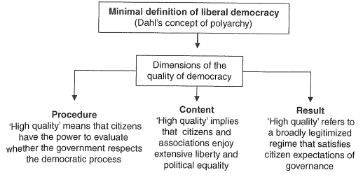

Table of Contents
- 1. Populism and (liberal) democracy: a framework for analysis
- 2. Populism: corrective and threath to democracy (Mudde, Kaltwasser)
- 2.1. Einleitung
- 2.2. Rückgriff auf Konzept und Hypothesen und Rückschlüsse
- 2.3. Von der Empirie zur Theorie: Unerwartete Befunde
- 2.4. Reaktionen auf Populismus
- 2.5. "Populismus führe zu kompetetivem Autoritarismus" (Levitski-Loxton)
- 2.6. Populismus und die internationale Ebene
- 2.7. Anregung für zukünftige Forschung
1 Populism and (liberal) democracy: a framework for analysis
1.1 Einleitung
- Versuch der Konstruktion eines Gedankengerüsts in dem der oft missbrauchte, nicht klare Begriff "Populismus" eine eindeutige Bedeutung hat und in dem die Beziehung zwischen Populismus und Demokratie empirisch untersucht werden kann
- bisher haben die meisten Studien im Hinblick auf Populismus & Demokratie normativ oder theoretisch argumentiert ohne die Empirie mit einzubeziehen
- außerdem verschiedene, teils konträre Definitionen von Populismus und Demokratie
- bisher haben die meisten Studien im Hinblick auf Populismus & Demokratie normativ oder theoretisch argumentiert ohne die Empirie mit einzubeziehen
- dehsalb in diesem Werk minimale Definitionen, inspiriert von Sartori, um breiten Geltungsbereich zu gewährleisten
- es geht hauptsächlich und viel mehr um Populismus an sich, statt um damit verbundene Ideologien
- Abgrenzung von Merkmalen die oft gemeinsam mit Populismus auftreten wichtig
- Populismus ≠ Klientelismus
1.2 Definition von Populismus
1.2.1 Geschichte des Begriffs "Populismus"
- Ursprünge im 19 Jahrhundert
- Populist Party in den USA
- Narodniki in Russland
- zusätzlich kann man noch Bauernaufstände während der Zwischenkriegszeit im 20 Jahrhundert v.a. in Osteuropa nennen
- im Zuge der Weltwirtschaftskrise 1930 trat Populismus auch vermehrt in Lateinamerika auf
- populistische Parteien waren in Lateinamerika eine große Herausforderung für die marxistisch geprägten Linken, da sie sich nicht durch strenge Ideologien abgrenzten und somit attraktiv für größere Wählerschaften waren
- in Westeuropa ist Populismus eher seit Ende des 20 Jhd zu beobachten
1.2.2 Untersuchung dreier Populismus Konzepte
- Populismus als Form der pol Bewegung
- Fundament dieser Definition stammt von Lipset & Seymour
- auf Lateinamerika fokussierte Definiton von Populismus
- vergleichbar mit europ. Faschismus, Pop. allerdings stärker abhängig von der Unterschicht, während Fasch. vom Mittelstand
- Populismus als "multi-class" Bewegung um einen charismatischen Führer (Gino Germani)
- Populismus attraktiv für unterschiedliche, heterogene Gesselschaftsgruppen
- charism. Führer & pop Parteien addressieren häufig "das Volk" etc
- "multi-class" Element allerdings ein zentraler Teil der Massenpolitik und nicht auf Populismus beschränkt (siehe catch-all/Volksparteien)
- Populismus als pol Stil
- Populismus als pol Stil der aus opportunistischen Gründen eine bestimmte "Verbindung" zwischen pol Führern und Wählerschaft propagiert, um hauptsächlich an pol. Macht zu gelangen
- demzufolge sei Populismus mit jeglichen Formen von Führern, Bewegungen und Parteien kompatibel
- Problem dieses Ansatz sei die Verwechselungsgefahr mit Demagogie und Opportunismus
- zu breite Definiton von Populismus, die so gut wie jeden pol Akteur als Populisten labelen könnte
- Populismus als pol Stil der aus opportunistischen Gründen eine bestimmte "Verbindung" zwischen pol Führern und Wählerschaft propagiert, um hauptsächlich an pol. Macht zu gelangen
- Populismus als "political logic"
- Populismus als "political logic" und nicht als Resultat bestimmter Klassenzusammenschlüsse
- Aufteilung in zwei soziale Lager: die Mächtigen vs das Volk
Ergebnis eines dreiteiligen Prozesses:
- Verortung verschiedener Forderungen und Bedürfnisse
- Ausfindigmachung eines kollektiven Feindes und dadurch Schaffung einer kollektiven Identität
- gefühlsbedingte Hingabe/Investition in ein Element (zB Führer) der "das Volk" repräsentiert
Problem dieses Ansatzes ist, dass er einerseits zu abstrakt ist und andererseits so vage und ausschweifend ist, dass er für empirische Analysen kaum geeignet ist
- Populismus als "political logic" und nicht als Resultat bestimmter Klassenzusammenschlüsse
1.2.3 Minimale Definition von Populismus
- seit 1990 wichtige Entwicklungen in der Debatte rund um die Definition von Populismus
- aufgrund von vermehrten Forschungsbeiträgen die versuchen eine Definition von Populismus zu liefern, die Probleme, welche bei der Anwendung des Konzepts auf neue Fälle auftreten können (Überziehung des ursprunglichen Konzepts), zu vermeiden
- Sartorisches Intension-Extension Dilemma: je mehr Eigenschaften einem Konzept zu Grunde gelegt werden, desto weniger Fälle deckt es ab
- Zwei unterschiedliche Arten von Kategorisierung
- radiale Kategorisierung = ein Phänomen kann durch eine bestimmte Menge von Eigenschaften konzeptualisiert werden, die allerdings nicht in jedem Fall vorhanden sind (oder vorhanden sein müssen)
- nicht alle Fälle weisen also genau die selben Merkmale auf, sondern es gibt nur mehrere, bestimmte Überschneidungen von Merkmalen/Eigenschaften
- weit & umfassende Kategorisierung, dadurch evtl ungenau
- sei ungeeignet fuer die minimale Definition von Populismus
- "common ground" könnte aufgrund des weiten Konzepts nur vorgetäuscht werden, während Autoren an ihren eigenen Konzeptualisierungen festhalten
- klassiche Kategorisierung = Eigenschaften eines Konzepts zur Erklärung eines Phänomens, müssen bei jedem Fall des Phänomens vorliegen
- alle Fälle müssen die selben, definierenden Eigenschaften aufweisen
- enger gefasst und auf den kleinsten gemeinsamen Nenner ausgerichtet
- radiale Kategorisierung = ein Phänomen kann durch eine bestimmte Menge von Eigenschaften konzeptualisiert werden, die allerdings nicht in jedem Fall vorhanden sind (oder vorhanden sein müssen)
- Annäherung an eine minimale Definition
- implizite Gemeinsamkeit zw Populismuskonzepten, dass es eine Gegenüberstellung von "dem Volk" und "der Elite" gibt
- jede Manifestierung von Populismus kritsiere kleine Kreise machtvoller Leute, die den Willen des allgemeinen Volkes unterdrücken
- Populismus als Ideologie, die Gesellschaft in zwei antagonistische Gruppen unterteilt (das pure Volk und die korrupte Elite)
→ Populismus sei im Grunde also allen vorran eine Form von moralischer Politik (pur/rein vs korrupt) und nicht soziokulturell (Ethnie, Religion) oder sozioökonomisch (Klasse) geprägt
drei grundlegende Elemente/Konzepte:
- das Volk, die Eliten und der Allgemeinwille
zwei Gegensätze:
- Elitismus (Macht gebündelt auf Wenige) und Pluralismus (keine zentrale Bündelung der Macht sondern Verteilung auf verschiedene, unabhängige Gruppen)
diese "dünne" Definition mit begrenztem Kern erlaubt, dass sie im Kontext anderer Konzepte und Ideologien verwendet werden kann (ideological flexibility)
- dies ist was Paul Taggart meint wenn er von der "chameleonic nature of populism" spricht
diese Definition kommt nah an viele andere Populismusdefinitionen
- definiert Populismus nämlich auch als pol Stil oder Strategie
- vernachlässigt jedoch mit Absicht die Frage nach der Intention der Populisten
- Ernsthaftigkeit oder lediglich als strategisches Mittel ist eher eine empirische Frage und daher ohnehin kaum zu beantworten
- außerdem keine Aussage über die Art und Weise der Mobilisierung durch Populisten (in Definition fuer Lateinamerika häufig)
- da unklar ob wesentliche Element von Populismus an sich oder eine empirische Konsequenz
- keine allzustarke Fokussierung auf Populistenführer
- da sonst zu starker Fokus auf "Populismusangebot" (durch Führer) und Vernachlässigung der evtl. "Populismusnachfrage" (durch Volk)
- implizite Gemeinsamkeit zw Populismuskonzepten, dass es eine Gegenüberstellung von "dem Volk" und "der Elite" gibt
1.3 Definition von Demokratie
- Ziel ist nicht die Definiton eines neuen Demokratiekonzepts und ein Überblick über vorhandene Definitionen, sondern eine kurze Darstellung der 3 Kernelemente (im Kontext "Demokratie") populistischer Debatten:
1.3.1 Demokratie
- heutzutage oft synonym mit liberaler Demokratie verwendet anstatt als Demokratie per se
- Demokratie (ohne Zusätze) sei die Kombination von Volkssouveränität und Mehrheitsentscheid
- nicht mehr und nicht weniger, kann also direkt, indirekt, liberal w/e sein
- Demokratie ansich bezieht sich auf die Methode wie Herrschaftsträger in kompetitiven Wahlen bestimmt werden
- eine Auswahl durch die Mehrheit des Volkes ist im Kern die Definition von repräsentativer Demokratie
1.3.2 Liberale Demokratie
- da auch umstritten, Wahl der (minimalen) Definition von Dahl:
- allerdings idealistisch konzeptioniert und daher einige Unterschiede zu existierenden Demokratien
- um die Optimierung der Dimensionen "public contestation"(öffentliche Kritik) und "political participation"(pol Teilhabe) zu gewährleisten, benötige es laut Dahl einiger institutionellen Garantien:
- Versammlungs- und Organisationsfreiheit
- Meinungsfreiheit
- Wahlrecht
- Right of political leaders to compete for votes
- Amtsfähigkeit
- Alternative sources of information
- freie und gleiche Wahlen
- Institutions for making government policies dependent on votes and other expressions of preference
1.3.3 Radikale Demokratie
- eher ideeller Typ als existierender Demokratietyp
- Hauptautoren radikaler Demokratie geben keine klare Definiton
- liberale Demokratie sei Konsens zu heilig und ignoriere, dass Demokratie bedeute für etwas und gegen jemanden zu kämpfen
- in diesem Sinne ist radikale Demokratie ähnlich der "demokratisierten Demokratie"
1.4 Populismus & Demokratie: Freund & Feind
- Populismus hat meist negative Konnotation; Demokratie positive
- das war nicht immer so/ist nicht überall so
- einige sind der Ansicht Populismus sei die reinste Form von Demokratie, oder dass Populismus die Voraussetzung für alles Politische sei
- das war nicht immer so/ist nicht überall so
- Populismus kann beides, eine Gefahr und eine Maßnahme zur Verbesserung, der Demokratie sein
- auf theoret. Ebene ist Populismus essentiell demokratisch, aber doppelseitig im Hinblick auf liberale Demokratie
- Populismus hat eine positive Beziehung zu repräsentativer Demokratie
- Populisten fechten nicht die Repräsentation an, sondern die falsche Repräsentation
- die Beziehung zwischen Populismus und liberaler Demokratie ist komplizierter
- eine Ursache ist die interne Spannung innerhalb des Konzepts liberaler Demokratie und zwar zum einen Herrschaft der Mehrheit und zum anderen der konstitutionelle Schutz von Minderheiten
- Populismus ist dabei eher auf der Seite der Mehrheitsentscheide (und gegen den Schutz von Minderheitsrecheten)
- eine Ursache ist die interne Spannung innerhalb des Konzepts liberaler Demokratie und zwar zum einen Herrschaft der Mehrheit und zum anderen der konstitutionelle Schutz von Minderheiten
- evtl. ist Populismus ein Nebenprodukt von Demokratie und verfolgt sie wie ein Schatten
1.5 Einfluss von Populismus auf Demokratiequalität: Freund & Feind

Figure 1: Dimensionen von Demokratiequalität
- pos Effekt = wenn Pop die Qualität von Demokr erhöht
- neg Effekt = wenn Pop die Qualität von Demokr senkt
- Populismus kann alle Dimensionen positiv und negativ beeinflussen
- Literatur führt viele Beispiele an wie Populismus positiv oder negativ beeinflussen kann
- diese sind allerdings oft irrelevant, weil sie im Zusammenhang mit der im Kontext stehenden Ideologie (zB Sozialismus, Nationalismus) stehen oder nicht Teil der hier verwendeten minimalen Pop. definiton sind (zB Art und Weise der Mobilisierung)
1.5.1 Positive Effekte
- Gibt Gruppen die sich nicht (gut) repräsentiert fühlen Sprachrohr (Einbezug marginalisierter Gruppen)
- Mobilisierung ausgegrenzter Gesellschaftsbereiche (zB Unterschicht), verbessert pol Integration
- Repräsentierung ausgeschlossener Gruppen durch Implementierung von gewünschten Policies
- Ideologische Brücke zur Schaffung von sozialen & pol Koaltionen, oft über Klassen hinweg
- Erhöhung demokratischer Accountability (Probleme werden Teil des pol Bereichs, statt bspw des ökonomischen)
- Revitalisierung von öffentlicher Meinung und sozialen Bewegungen, durch Rückkehr der Dimension pol. Konflikte
1.5.2 Negative Effekte
- Zuwiederhandeln im Bezug auf checks & balances und Gewaltenteilung durch Volkssouveränität
- Ignoranz von Minderheitsrechten durch Mehrheitsentscheid
- Etablierung eines politischen Cleavage (Populisten vs Nichtpopulisten)
- Moralisierung von Politik (Kompromisse & Konsens werden erschwert)
- Plesbizitäre Transformation von Politik (Untergrabung der Legitimät und Macht von pol Institutionen)
- Minimierung des Politischen und des demokr Raums durch anti-elitäres Agieren
1.6 Wann wirkt Populismus positiv?
Unterteilung von Populismus und Demokratie in schwache & starke Gruppen:
- Populismus in der Regierung (stark)
- Populismus in der Opposition (schwach)
- konsolidierte Demokratien (stark)
- nicht-konsolidierte Demokratien (schwach)
Annahmen:
- Populisten sind effektiver in schwachen Demokratien
- bzw die Stärke der Demokratie beeinflusst die Stärke der Wirkung die Populismus auf jene haben kann
- populists will prioritize negative effects in government and positie effects in opposition
- die Stärke des Populismus beeinflusst die Wirkung auf die Demokratie
Hypothesen:
- Populismus innerhalb der Regierung hat stärkeren Effekt auf die Demokratie als Populismus innerhalb der Opposition
- Populismus innerhalb der Regierung hat mehr negative Effekte auf die Demokratie als Populismus innerhalb der Opposition
- Populismus hat stärkere Effekte auf nicht-konsolidierte Demokratien als auf konsolidierte Demokratien
- Populismus innerhalb der Opposition in konsolidierten Demokratien hat moderate positive Effekte auf die Demokratiequalität
- Populismus innerhalb der Opposition in nicht-konsolidierten Demokratien hat moderate positive Effekte auf die Demokratiequalität
- Populismus innerhalb der Regierung in konsolidierten Demokratien hat moderate negative Effekte auf die Demokratiequalität
- Populismus innerhalb der Regierung in nicht-konsolidierten Demokratien hat signifikante negative Effekte auf die Demokratiequalität
2 Populism: corrective and threath to democracy (Mudde, Kaltwasser)
2.1 Einleitung
Analyse von 8 überregionalen Fallstudien
- Populismus stehe in Konflikt mit (liberaler) Demokratie
- wird der Einfluss von Populismus auf Demokratie durch regionale oder generelle Faktoren bzw Kontext bestimmt?
- hängt Vorhandensein von Populismus mit Faktoren zusammen, die in bestimmten Regionen der Welt häufiger anzutreffen sind?
2.2 Rückgriff auf Konzept und Hypothesen und Rückschlüsse
- minimale Definitionen/Konzepte von Demokratie & Populismus, um konzeptuellen Geltungsbereich zu erweitern
- Nachteil, dass sie nicht genug Tiefe haben, um relevante Aspekte/Merkmale eines Phänomen zu unterscheiden
- "das Volk" wird in wohlhabenden Gesellschaften eher ethnisch definiert und in ärmeren Gesellschaften eher sozio-ökonomisch
- Populismus lässt wenig Raum für Pluralismus und öffentliche Kritik / pol Wettbewerb
- Populisten beziehen sich häufig auf 2 Demokratiedimensionen:
- Kritik an schlechten Ergebnissen des Regimes
- Vorlagen für Änderungen an demokr Verfahren (Prozesse/Prozere/Abläufen)
- das erklärt warum sie in der Theorie Plesbizite und Formen direkter Demokr bevorzugen
- Populismus ist nicht gegen repräsentative Demokratie, sondern appelliert für extreme Demokratie, indem sie allen ungewählten Körperschaften/Institutionen ggü enorm kritisch sind
| Demokratie \textbackslash{Populismus} | in Opposition | in Regierung |
|---|---|---|
| konsolidiert | kein großer Einfluss auf Demokr.qualität | |
| nicht konsolidiert | kein großer Einfluss auf Demokr.qualität | gemischte Ergebnisse (demokr Breakdown und pos Effekte) |
2.3 Von der Empirie zur Theorie: Unerwartete Befunde
Einsichten in unerwartete Bereiche:
2.3.1 Populismus auf subnationaler(lokaler) Ebene
- in Mexiko hatte Populist Lopez Obrador auf lokaler Ebene (Mexiko City) positive Wirkung, negative dann während des Präsidentenwahlkampfes (Korruption, Blockaden)
- Haiders negative Bestrebungen (Ausgrenzung von Sloveniern) auf lokaler Ebene in Carinthia wurden durch Verfassungsgericht begraben
→ Populismus an der Macht auf lokaler Ebene wenig einflussreich auf Qualität der Demokratie (bzw weniger als auf nationaler Ebene)
- weil auf regionaler Ebene immernoch die nationale Ebene übergeordnet ist
- und weil die regionale Ebene noch von nationaler Ebene entfernt ist begrenzen sich die Populisten und halten sich zurück (um mehr Stimmen abzufangen)
2.4 Reaktionen auf Populismus
Herauskristillasierung von vier Strategien (treten in gemischter und nicht in Reinform auf)
- Isolation
- Leugnung jeglicher Legitimät der populistschen Behauptungen
- Dämonisierung der Populisten
- Konfrontation
- nicht nur Abstreiten der Behauptungen sondern auch Attackierung der Populisten
- Adaption
- gewisse Legitimät der Forderungen der Populisten wird eingeräumt
- Populismus in gewisser Weise eher als Mittel zur Verbesserung
- Anregung evtl. Lernprozesse, durch die etablierte Parteien sich erneuern & anpassen
- Sozialisierung
- komplementär zur Adaption
- kurz und langristige Maßnahmen zur Aufnahme von Populisten
- "Pazifismus durch Deradikalisierung"
2.5 "Populismus führe zu kompetetivem Autoritarismus" (Levitski-Loxton)
2.6 Populismus und die internationale Ebene
- Verteidigung der Demokratie nicht einfach auf internationaler Ebene
- internationales Eingreifen kann kontraeffektiv sein (Anti-EU oder Americanismo)
2.7 Anregung für zukünftige Forschung
- Diffusion von Populismus (Ausbreitung von einer Gesellschaft auf andere)
- (Partei-)Organisation von Populisten